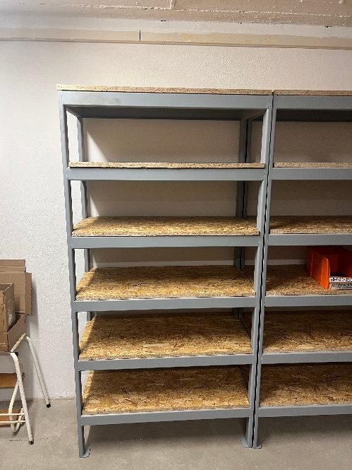
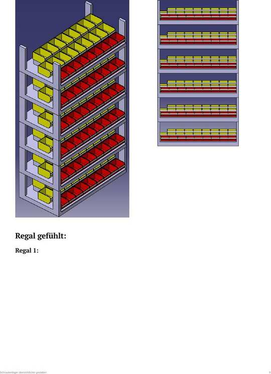

Projekt 1: Neuorganisation des Schraubenlagers
Das Schraubenlager zieht vom Erdgeschoss in den Keller. Für sechs neue Regalfächer wurde ermittelt, welche Boxengrößen gebraucht werden, wie viele nebeneinander passen und wie das Trennsystem aussehen muss – damit jede der 135 Schraubensorten einen festen, beschrifteten und sofort auffindbaren Platz bekommt.
Die Aufgabenstellung in einem Satz
Ausgangssituation
Das neue Regal stand im Keller bereits – sechs Fächer à 930 × 500 mm, selbst angefertigt aus Winkelstahl mit eingelegten Holzplatten. Was fehlte, war ein System: Ohne festgelegte Boxengrößen und Trennstege wäre jede Schraubensorte irgendwo verstaut worden, ohne dass sie schnell wiederzufinden gewesen wäre.

Das neu aufgebaute Regal im Keller – noch ohne Boxen, Trennsystem oder Beschriftung.

Empfohlene Variante „S · M · L“: jede Länge bekommt die passende Boxgröße (gelb = M, rot = S).
Vorgehen
Klick auf einen Schritt, um Details zu sehen.
Auftrag vom Betreuer erhalten: Bito-Boxen-Größe festlegen, Trennsystem planen, alles zugänglich und beschriftet machen. Die vier Maße des Regalfachs (930 × 980 × 500 × 350 mm) aus der Zeichnung aufgenommen.
Die Excel-Bestandsliste mit 135 Schrauben-Sorten (4 Typen) ausgewertet: Verteilung nach Typ, Gewinde und Länge, dazu eine ABC-Analyse der Längen. Daraus den Boxenbedarf abgeleitet: 14 × klein, 81 × mittel, 40 × groß.
Für jeden der 4 Schraubentypen eine Matrix aus Gewinde × Länge aufgebaut und Schubladenvarianten verglichen. Anschließend alle 4 Typen zu einer Gesamtmatrix mit 8 Schubladen zusammengeführt.
Zwischenstände besprochen – etwa offene Fragen zur tatsächlichen Fächeranzahl und zu den Layoutvarianten – und Annahmen zu Maßen bestätigt bzw. korrigiert (z. B. 920 → 930 mm Fachbreite).
Ein 100-mm-Rastermaß festgelegt, drei Boxgrößen (S 102 · M 115 · L 145 mm) und fünf Fachvarianten im CAD konstruiert, daraus drei komplette Regalvarianten (144, 156 und 162 Boxplätze) modelliert.
Grob- und Feinnachweis geführt (reicht die Platzzahl UND passt die Größenverteilung?), die drei Regalvarianten in einer Nutzwertanalyse bewertet und eine Empfehlung ausgesprochen.
Ergebnisse auf einen Blick
- Vollständige Bestandsmatrixfür 4 Schraubentypen – 135 Sorten, lückenlos nach Ø und Länge erfasst.
- Boxenbedarf ermittelt14 × klein, 81 × mittel, 40 × groß.
- Schubladenkonzeptmit 8 Gruppen, gestaffelt nach Länge.
- Drei Boxgrößen konstruiertS 102 · M 115 · L 145 mm Breite – nutzen die 930-mm-Fachbreite fast restlos aus.
- Fünf Fach-Varianten im CADaufgebaut, Kapazität von 12 bis 27 Boxen je Fach ermittelt.
- Drei komplette Regalvariantenmodelliert: 144, 156 und 162 Boxplätze.
- Kapazitätsnachweis geführtdie Platzzahl reicht, die Verteilung auf S/M/L nicht ganz.
- Belegungsplan erstelltjede der 135 Sorten hat einen benannten Platz.
Welche Regalvariante ist die beste? – Nutzwertanalyse
Drei Bestückungsvarianten kamen infrage. Bewertet wurden sie nach Übersichtlichkeit, Platzausnutzung, Passung zum tatsächlichen Bedarf, Erweiterbarkeit und Beschaffungsaufwand (Bewertung 1–5, gewichtet).
| Kriterium | Gewicht | Volle M | 1S 2M | S · M · L |
|---|---|---|---|---|
| Übersichtlichkeit | 30 % | 3 | 4 | 5 |
| Platzausnutzung | 25 % | 5 | 4 | 3 |
| Passung zum Bedarf | 25 % | 2 | 4 | 5 |
| Erweiterbarkeit | 10 % | 4 | 4 | 3 |
| Aufwand Beschaffung | 10 % | 5 | 4 | 3 |
| Nutzwert | 100 % | 35,5 | 40,0 | 41,0 ✓ |
Empfehlung: Variante „S · M · L“. Höchster Nutzwert – jede Schraubenlänge bekommt die passende Boxgröße, die Übersichtlichkeit ist am besten und der Bedarf an großen Boxen wird am ehesten getroffen. Die geringere Platzzahl (144) reicht für die 135 Sorten rechnerisch aus.
Umsetzung & Ergebnis
Der Belegungsplan legt fest, welche Schraube in welche Box kommt – sortiert nach Gewinde je Reihe, aufsteigend nach Länge, farbcodiert nach Boxgröße (rot = S, gelb = M, grün = L).

Jede Box ist einer konkreten Schraubensorte zugeordnet (Beispiel: zwei Fächer aus dem Belegungsplan).
<img src="../img/projekt-1-nachher.jpg" alt="...">
Nutzen im Betrieb
Rechnung: 70 s Ersparnis × 15 Entnahmen/Tag × 240 Arbeitstage ≈ 70 Stunden. Die Annahmen (90 s / 20 s / 15 Entnahmen) sind Schätzwerte und sollten im Betrieb kurz gemessen werden – die Größenordnung ändert sich dadurch aber nicht.
Beitrag zu 5S
Sortieren
135 Sorten erfasst, Dubletten sichtbar gemacht.
Systematisieren
Fester Platz nach Gewinde und Länge, im CAD festgelegt.
Standardisieren
Drei definierte Boxgrößen statt beliebiger Behälter.
Selbstdisziplin
Entnahmeliste und Nachfüllregel als nächster Schritt.
Offene Punkte & nächste Schritte
| # | Aufgabe | Warum | Priorität |
|---|---|---|---|
| 1 | Platz für 16 große Boxen schaffen | Feinnachweis zeigt: 6 Fächer decken die L-Boxen nicht ab | hoch |
| 2 | Lagermenge je Sorte festlegen | Entscheidet direkt über die benötigte Boxgröße | hoch |
| 3 | Lösung für die zwei 250-mm-Schrauben | Passen in keine der drei Boxgrößen | mittel |
| 4 | Belegungsplan digitalisieren | Liegt bisher nur handschriftlich vor | mittel |
| 5 | Etiketten erzeugen und anbringen | Ohne Beschriftung kein 5S-Nutzen | mittel |
| 6 | Restliche Teile aufnehmen (Nägel, Scheiben, Edelstahl) | Rund 148 weitere Sorten noch nicht erfasst | niedrig |
Fazit – was ich mitnehme
Bestandsdaten sind die halbe Miete
Ohne saubere Matrix lässt sich kein Boxenbedarf ableiten – die Bestandsaufnahme war der aufwendigste, aber wichtigste Schritt.
Erst rechnen, dann konstruieren
Die Boxbreiten wurden bewusst so gewählt, dass 9, 8 oder 6 Stück in die 930 mm passen – nicht umgekehrt.
Der Feinnachweis entscheidet
Die reine Platzzahl sah gut aus – erst die Aufteilung nach S/M/L hat die eigentliche Engstelle sichtbar gemacht.